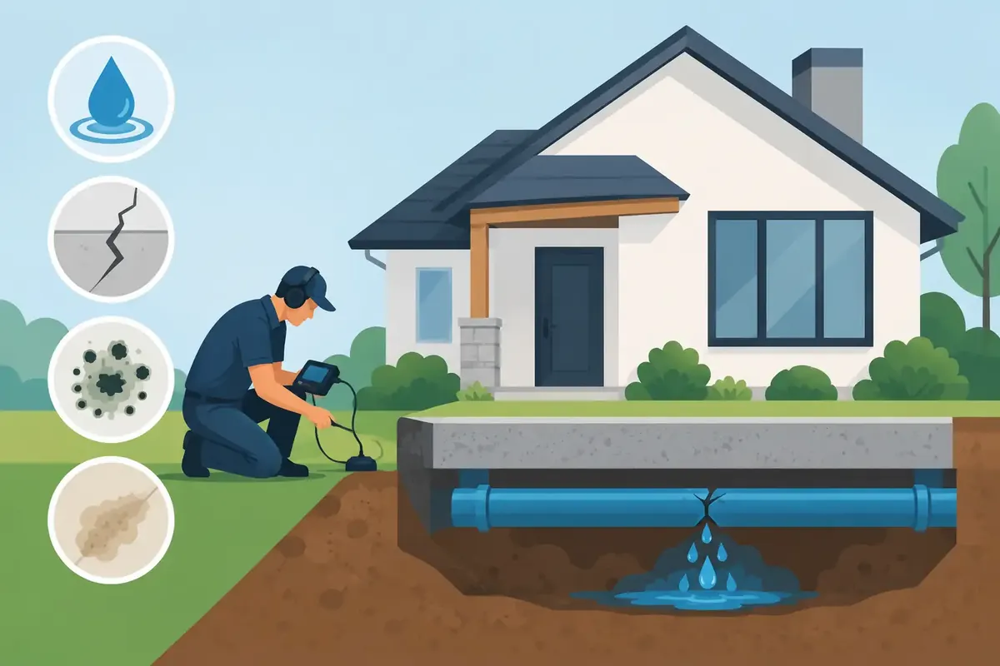

A warm spot in the floor, the quiet sound of running water when every fixture is off, or a water bill that suddenly climbs can point to a leak beneath your home. Slab leak detection is the process of finding that hidden problem before it has more time to damage flooring, foundations, walls, and household peace of mind.
For Middle Tennessee homeowners, a slab leak can feel especially frustrating because the pipe is out of sight and the source is not always obvious. The good news is that finding a leak does not automatically mean tearing up an entire floor. A trained plumbing professional can use a careful testing process to narrow down the location and recommend the repair approach that makes the most sense for your home.
What Is a Slab Leak?
A slab leak occurs when a water or drain line running beneath a concrete slab foundation develops a break, crack, or pinhole leak. Many homes have plumbing lines installed below or through the concrete foundation, so a leak may release water into the soil, under the slab, or upward into the home.
Water-supply slab leaks are often easier to notice because they can run continuously under pressure. Drain-line leaks may be less obvious, since they generally leak only when water is being used. Either type deserves prompt attention. Left alone, escaping water can wash away supporting soil, contribute to moisture problems, and create costly damage well beyond the original pipe repair.
Signs You May Need Slab Leak Detection
Most property owners do not see the pipe itself. They notice changes around the home instead. One sign by itself may have another explanation, but several signs together should lead to a professional inspection.
A higher-than-normal water bill is a common warning, especially when your household's routine has not changed. You might also hear water moving through pipes when faucets, appliances, and irrigation systems are off. If your water meter continues to move after you shut off all water use, there may be a leak somewhere on the property.
Inside the home, watch for warm or damp areas on a concrete floor, cracked or lifting flooring, mildew odors, unexplained damp carpet, or baseboards that begin to swell. A hot-water line leaking under the slab can sometimes create a noticeably warm section of tile, hardwood, or concrete.
Outside, a wet area near the foundation, unusually green grass in one small spot, or standing water during dry weather can also be a clue. In some cases, homeowners see cracks in floors or walls. Foundation movement can have several causes, so cracks do not prove a slab leak on their own, but they are worth taking seriously when they appear alongside water-loss symptoms.
Commercial buildings can show similar signs, along with disrupted operations, restroom moisture issues, increased utility costs, or recurring pressure problems. For a business owner or facility manager, early testing can prevent a small hidden leak from becoming a larger repair and interruption.
How Professional Slab Leak Detection Works
Effective slab leak detection begins with confirming whether water is actually being lost and determining whether the problem is likely below the foundation. A plumber may review your utility usage, inspect visible plumbing, test water pressure, and check the meter. This helps rule out more accessible leaks at fixtures, water heaters, irrigation connections, or exposed lines.
Once a concealed leak is suspected, technicians can use specialized methods to narrow the location without making unnecessary openings. The tools and testing methods depend on the plumbing system, pipe material, building layout, and whether the suspected leak is on a pressurized water line or a drain line.
Acoustic listening equipment
Pressurized leaks can create sound as water escapes from a pipe. Sensitive electronic listening equipment may help a technician trace that sound through the slab and identify the strongest area. Background noise, thick flooring, and the depth of the pipe can affect accuracy, which is why experience matters as much as the equipment.
Pressure testing and isolation
A plumber may isolate sections of a plumbing system and monitor pressure changes. If pressure drops after a section is separated from normal use, that gives valuable information about where the leak may be occurring. This testing can also help distinguish a supply-line leak from another source of water loss.
Thermal and moisture evaluation
Thermal imaging can sometimes reveal temperature differences caused by a leaking hot-water line. Moisture testing may identify where water has traveled into flooring or nearby building materials. These methods do not replace proper plumbing tests, but they add useful evidence and can reduce guesswork.
Drain camera inspection
When a drain or sewer line is the concern, a camera inspection may reveal breaks, offsets, root intrusion, or deteriorated pipe sections. Not every drain-line slab leak can be located from inside the pipe alone, but a camera can help establish the pipe's condition and guide the repair plan.
The goal is not simply to find a wet spot. It is to understand the source, confirm the affected line, and give you a repair recommendation based on real findings rather than assumptions.
Why Waiting Can Cost More
A small leak beneath a slab rarely stays small in its impact. Water can continue to flow around the clock, increasing utility costs while saturating soil beneath the foundation. Over time, that moisture can contribute to shifting or settling conditions around a home, though the exact risk depends on the soil, drainage, leak size, and foundation design.
Water can also migrate upward and damage finished floors, cabinetry, drywall, and personal belongings. Moisture trapped beneath flooring creates conditions where odors and microbial growth may develop. With a hot-water leak, your water heater may work harder than usual because it is constantly replacing lost hot water.
The best time to investigate is when you first notice a pattern. Prompt slab leak detection provides more repair choices and can help limit the area affected by water.
Repair Options Depend on the Pipe and the Home
There is no single right repair for every slab leak. After locating the issue, a plumber should explain the practical options, the expected scope of work, and the trade-offs before repairs begin.
A direct access repair involves opening the slab near the damaged pipe and repairing that section. This can be a sensible solution when the leak is in an accessible area and the rest of the piping is in good condition. It may require concrete and flooring repair afterward, so the full restoration scope should be clear from the start.
Rerouting, sometimes called re-piping around the slab, moves the affected line through walls, ceilings, or attic spaces rather than repairing beneath the concrete. This option can make sense when a pipe has failed repeatedly, when the original material is aging, or when future access is a major concern. It can involve drywall work and a larger upfront investment, but it may reduce the likelihood of another under-slab failure on that line.
For certain drain lines, trenchless repair methods may be possible. The suitability depends on pipe condition, the location of damage, and whether the line can be properly prepared. A trustworthy recommendation considers the long-term condition of the system, not just the quickest patch.
What to Do While You Wait for a Plumber
If you suspect an active slab leak, avoid ignoring it for days. First, check for obvious fixture leaks and make sure no appliances are running. If the water meter continues to move with all water use off, document what you see and arrange service as soon as possible.
If water is appearing inside the home, move rugs, furniture, and valuables away from the affected area. Do not attempt to break concrete or remove finished flooring until the source has been assessed. If the leak is significant or water is spreading quickly, shut off the home's main water supply if you can do so safely and contact an emergency plumbing professional.
Taking photos of moisture, floor changes, and meter readings can also be helpful. These details give the technician a clearer picture of when the problem began and how it has progressed.
A Careful Diagnosis Brings Peace of Mind
Hidden leaks are stressful because homeowners cannot see what is happening beneath the floor. You deserve a diagnosis that is careful, clearly explained, and based on the condition of your actual plumbing system. Angle Stop Plumbing brings 31 years of experience to Middle Tennessee homes and businesses, with respectful service, upfront pricing, and a family-friendly No Foul Language Guarantee.
If your water bill is rising, your floor feels warm, or you hear water running with no clear source, do not wait for visible damage to make the decision for you. A timely inspection can replace uncertainty with a clear plan for protecting your home, your budget, and the people who depend on both.